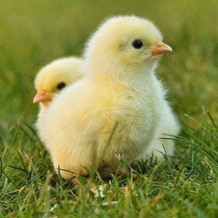
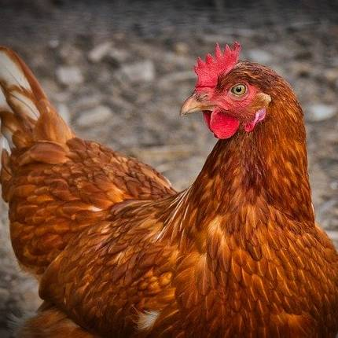
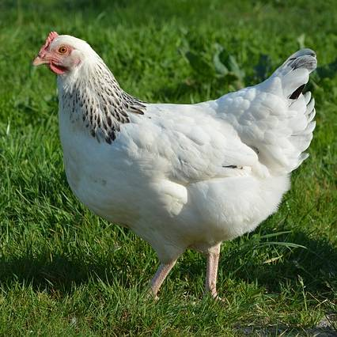
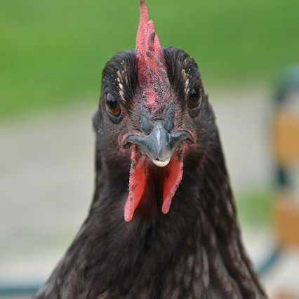
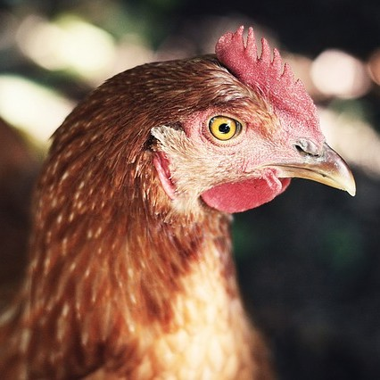
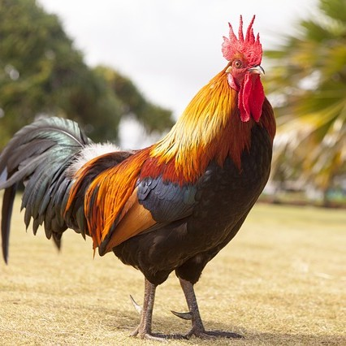
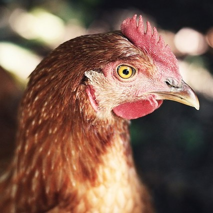
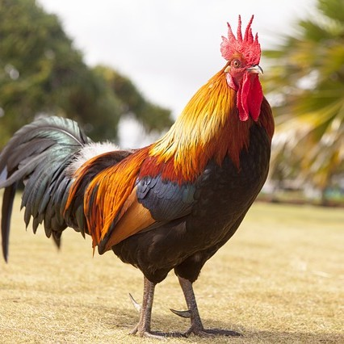
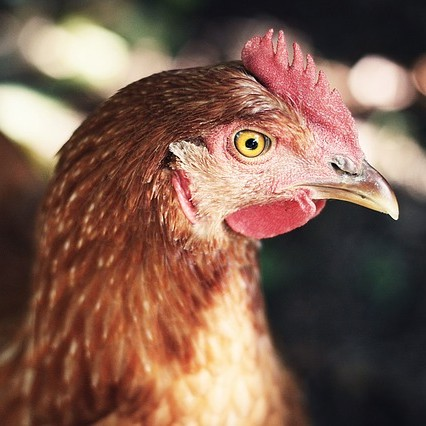
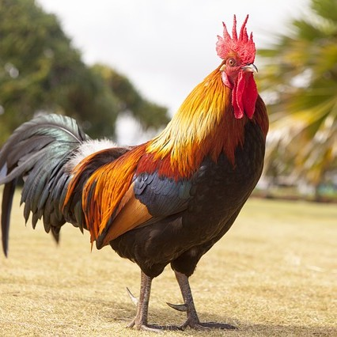

Hönshuset ligger 20 minuter utanför Växjö, en 10 minuters promenad österut från bondgården där man hittar parkering för allmänheten. Djuren i hönshuset är många räddade från ägg- och köttindustrin, men även de som använts inom djurtester har vi räddat.
Hönsen bor ute i kanten av en åker där de har fri tillgång till att vara ute och äta och busa. De försäkras att leva säkert och är tryggt inhängnade och bevakade dygnet runt.
Här kan man även få möjlighet att köpa ägg från våra älskade hönor för 2kr/ägget.
Djuren i hönshuset




 





växjödjurfristad@email.se
Hittepågatan 23, Växjö 352 55
Må-To 9.00-16.00
Lö-Sö 10.00-15.00